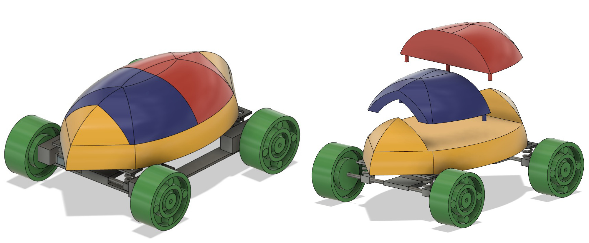
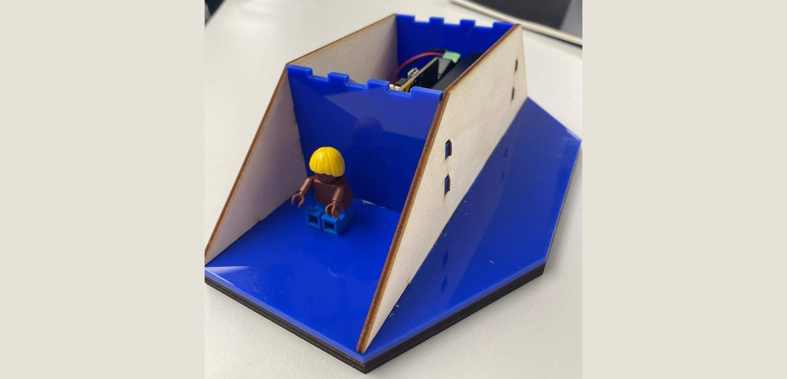
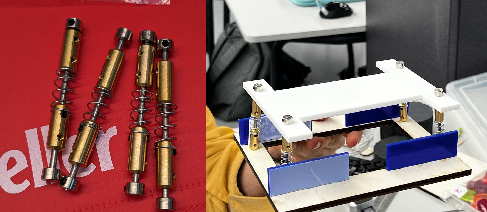
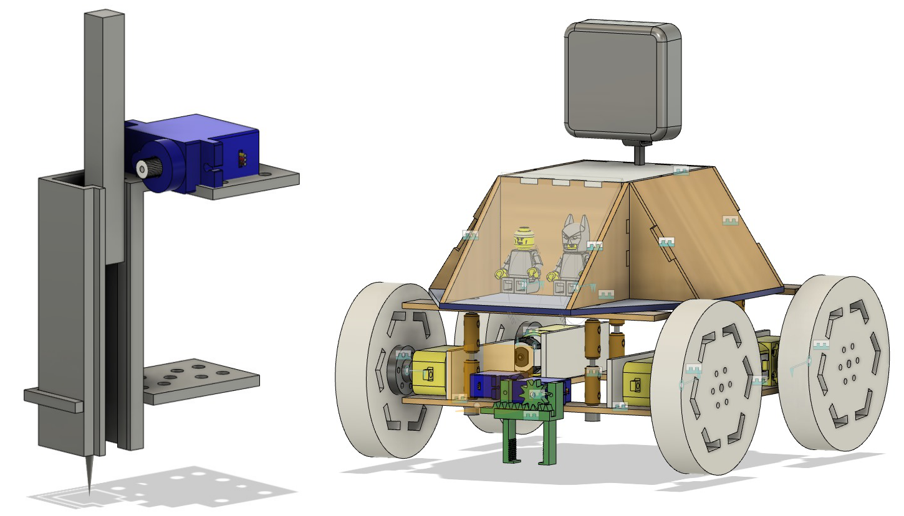
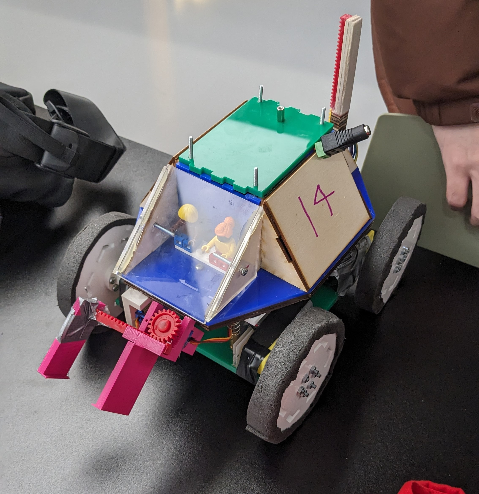

This project was created in a group of 5 people, with my job being the CAD designer, builder and suspension system designer for the mars rover. We created this rover for a course wide competition, where the rover must traverse through an obstacle course, pick up objects of varying sizes with a claw and drill through different sediments all while competing for the fastest time.
The original design was based on a turtle shell, where there's a front and back compartment used for the passengers and electronics respectively. This design would follow a dome shape, however after prototyping with vacuum forming I decided to switch to a more angular approach using laser cutting, as creating a perfect dome shape proved to be incredibly difficult. This pod would then be attached to a lower platform using a suspension system to dissipate impact.
This design required much more thought during the modelling process in comparison to the original concept, but also allowed me to create specific compartments for the battery and motor carrier. The image below shows the new model being created.
We were also required to make a suspension system to minimise the impact of a drop test. This system was made using widely available parts in the lab. The top base is where the main body will connect to, and the lower section where the motors connect to. The blue laser cut sections are used to give support to the motors. Wires are then threaded underneath to connect the board to the motors.
I designed a needle shape for the drill similar to precusive drills, with a rack and pinion attached to a servo motor to allow for repetitive strikes.
For maximum efficiency, we created a very simplistic claw as to not make the rover too front heavy.
Below is the final physical rover made for demonstration day, with the rack and pinion drill being slightly increased in size to make sure the full length of the drill is used. We also used rubbery material on the wheels to act as tires which increase friction. During our testing phase, the bottom base had cracked from the force of the upper body of the rover, which resulted in us cutting a new one out of a much thicker acrylic peice to ensure stability.
Our modifications to the design earned us second place in the competition.
